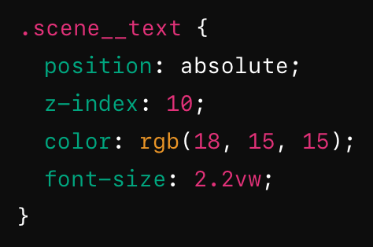

Assignment 3: BEM Methodology
Link to Original Assigment 3The main issues with Assignment 3 included a lack of titles, insufficient emphasis on key text, and the need for more engaging interactions and animations.
Main Contributions:
My main contributions to Assigment 3 were:
-
Recreating scenes 5-8
-
Adding reduced motion to all animations
-
Animating boats
-
Applying text throughout the whole story
-
Adding the IDG12 logo
Improvements:
Titles and Emphasized Text: Added clear titles to each slide for better context and understanding. Enhanced the text detailing CO2 consumption and environmental impact from scenes 3 to 7.
-
Interactions: Added more boats and interactions on the world map scene to illustrate global transportation impact.
-
Animations: Fixed and refined animations for smoother and more engaging visual effects.
During the review and enhancement of my code for Assignment 3, I identified several instances of redundant code, particularly within the sections where I formatted paragraphs for stories. Each section repeatedly defined properties like position: absolute, font-size, color, and z-index. To streamline this, I introduced a common class, .scene__text, to encapsulate these shared properties. The implementation is as follows:
This modification reduced the redundancy in CSS a bit, ensuring that all paragraphs within these sections inherit the common styling properties from the .scene__text class.
Additionally, I noticed that some paragraphs lacked class names and were instead being targeted through selectors like .section-nine__para > p. To address this, I assigned specific class names to these paragraphs, improving both the clarity and maintainability of the code.
Another common pattern was the use of position: absolute for numerous images. To optimize this, I created a new class, .position__item--absolute, and applied it to all elements that required this positioning. This approach not only reduced the code duplication but also made it easier to manage and update these properties across the project.
Key Changes for Animation Implementation:
The goal was to animate two boats along different paths in sections five and seven of a webpage, ensuring that the boats move in the correct direction and sequence. Each boat needed to start from the appropriate position along its path, and the second boat in each section should only start moving after a delay, fading in smoothly to enhance the visual effect.
Implemented distinct animations for each boat using the animateBoat and animateBoatWithFadeIn functions. Ensured that the boats in section five moved in the same direction with staggered starts, while the boats in section seven moved in the reverse direction with similar staggered starts. I also set the initial position of each boat along its path to ensure they start from the correct location. Used GSAP's getPointAtLength function to position the boats accurately at the start of their respective paths.
Fade-In Effect for the Second Boat:
I created a fade-in effect for the second boat in each section to enhance visual appeal. Used GSAP timelines to combine the fade-in effect with the boat's movement, ensuring a smooth transition from opacity 0 to 1 before starting the animation along the path.
I also reduced the delay for the second boat animation to 1.5 seconds to ensure a shorter wait time before it starts moving. Maintained a fade-in duration of 1 second to provide a quick yet noticeable transition.
Accessibility and Sustainability:
Since we learned more about reduced motion, I implemented it throughout the project to make the animations more accessible to users with motion sensitivities. I optimized SVGs in the same way as in Assigment 2, reducing file sizes and improving performance.
Credits:
I would like to credit my group members for their contributions to this assigment:
-
Marius Sandvik Bjørnstad
-
Jakub Olszewski
Live Page & Code
You can view live version of my assigment here: Link to Updated Version. The source code for this project is available on Github: repository.